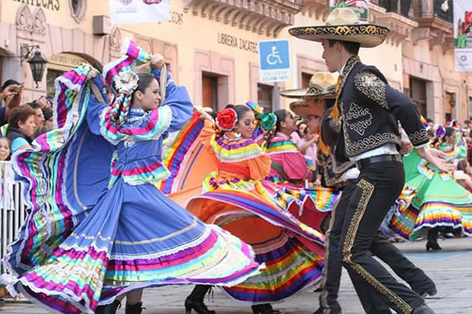
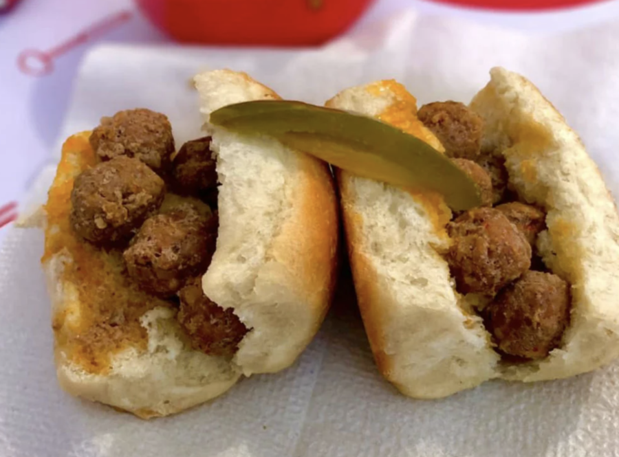

En el mes de julio se lleva a cabo uno de los festivales más esperados por los zacatecanos y visitantes. Se trata del Festival Zacatecas del Folclor Internacional. Este da comienzo el último domingo de julio y dura una semana. Se trata sin duda de un evento donde la capital de Zacatecas y muchos de sus municipios, viven y disfrutan de la fiesta y el colorido de las expresiones folclóricas Y culturales de un gran número de países que, desde 1996, acude a esta reunión de convivencia.

*Asado de boda
*Tacos envenenados
*Enchiladas zacatecanas
*Tostadas de Jerez
*Gorditas de maíz
*Pipián
*Caldo de rata de campo
*Birria de borrego
*Quiote
*Queso de tuna
*Las tortas de malpaso
*Empanadas de picadillo

Notas relevantes:
En 1864 los franceses tomaron Zacatecas y ahí permanecieron durante dos años, llevando
consigo sus costumbres alimenticias; así, los invasores introdujeron a la gastronomía local platillos elaborados
con mantequilla y crema, almendras, ciruelas pasas, vinos generosos, coco, piñones, frutas envinadas y
cubiertas, bizcochos y el chocolate con leche.